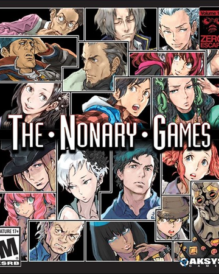

Zero Escape: The Nonary Games |
||
|---|---|---|
|  | Sinopsis: Dos juegos donde el número nueve es el protagonista dos grupos de nueve participantes secuestrados en lugares desconocidos. Un grupo está atrapado en un barco a punto de hundirse con nueve horas para escapar, y el otro está encerrado en unas instalaciones donde se verán obligados a confiar en los demás o traicionarlos. Si rompen las reglas o no logran escapar... morirán. ¿Por qué fueron seleccionados para el juego? ¿Quién es Zero? Nada es lo que parece. Lucharán desesperadamente por sobrevivir en este juego letal a vida o muerte. |
Desarrollador:Pike Chunsoft Plataformas: PlayStation 4,Microsoft Windows, Nintendo Switch Año: 2018 Duracion:25 horas aprox Pais:Japon |
Criticas Profesionales:AlvaroTres juegos que, pese al paso del tiempo, siguen resultando tan frescos e inteligentes como en el lanzamiento original. Se echan en falta mejoras, añadidos y traducción al español, pero el hecho de que lleguen por fin a todas las plataformas hace que sea difícil "objetar" |
Trailer |
Obtener:AlquilarComprar |
Registrate/Iniciar Sesion